南関競馬コース完全ガイド
船橋・川崎・大井・浦和競馬場の各コースの特徴と攻略法を詳しく解説
南関東競馬（南関競馬）は、大井・船橋・川崎・浦和の4つの競馬場で構成される日本最大の地方競馬エリアです。各競馬場は独自のコース特性を持ち、距離別に異なる攻略法が存在します。
プロの予想で的中率アップ！
当サイトのコース解説と合わせて、プロの競馬予想を活用することで、さらに的中率を向上させることができます。
南関競馬に精通した予想家が、各競馬場の特性を踏まえた厳選予想を毎日無料で公開中。
過去の的中実績や回収率も確認できるので、安心して参考にしていただけます。
※外部サイトに移動します
南関競馬場コース比較表
| 競馬場 | 回り | 1周距離 | 直線 | フルゲート | 特徴 |
|---|---|---|---|---|---|
| 大井 | 右回り | 内1,400m 外1,600m |
内286m 外386m |
16頭 | 左右両回り可能な特殊コース |
| 船橋 | 左回り | 内1,250m 外1,400m |
308m | 14頭 | スパイラルカーブが特徴 |
| 川崎 | 左回り | 1,200m | 300m | 14頭 | 4角の急カーブ、スピードコース |
| 浦和 | 左回り | 1,200m | 220m | 12頭 | 小回り平坦、力勝負のコース |
大井競馬場 - 左右両回りの特殊コース攻略法


大井競馬場のコース特徴・基本データ
| 回り | 右回り（左回りも可能） |
|---|---|
| フルゲート | 16頭 |
| 1周距離 | 内回り：1,400m / 外回り：1,600m |
| 直線 | 内回り：286m / 外回り：386m |
| 幅員 | 25m |
| 特徴 | 日本で唯一左右両回りが可能な競馬場 |
大井1000m攻略法｜スタートダッシュが勝負を決める短距離戦
スタートして間もなく最初のコーナー入るため出遅れは致命的になる。主に新馬戦で多く組まれており頭数が多いと枠順の内外の有利不利も大きく、スタート、ダッシュ、スピードが問われる条件だ。前に行った馬が止まらない傾向が強いが、前がやりあうと直線は急なような差し切りも。
大井1200m攻略法｜東京スプリントの舞台・スピード勝負の本格戦
スタート後の直線は長いが、頭数がそろう条件で外枠はやはり不利。特に外の逃げ馬はスタートを決めることが勝走の絶対条件。また内枠でペンに行けないと外から一気に来られ、厳しい競馬を強いられることになる。ハイペースが多いが前が止まらず、差し馬もある程度の位置で進めたい。東京スプリント、東京杯と交流重賞が行なわれ、毎年中央・地方と全国の俊足自慢が集結する。
大井1400m攻略法｜内枠有利で展開が鍵となるマイル前哨戦
2コーナーのポケット過ぎからのスタートで、脚質に関係なく内枠が有利。逃げ・先行馬は外枠だとコースロスが大きく割引が必要、また内枠で出遅れると馬群に来るため厳しいレースを強いられることになる。差し馬は内枠から好位につければロスなく運べ、長い直線をフルに生かせる。この距離で行われた東京スプリング杯をフジノウエーブが4連覇し、フジノウエーブ記念と改称。
大井1500m攻略法｜内回りコース使用の特殊条件
一周1300mの内コースを使用しているのが最大の特徴。外コースに比べると直線距離は100m短く先行タイプには競馬し易い条件だが、ペースは落ち着くことでマクリが決まることも少なくない。基本は早めの立ち回りを求められるし、コーナー捌きなどある程度器用さを備えた馬の方が計算できる。また、1000mと同じスタート地点でやや内枠有利。2400mと同じく流れが落ち着きスローペースが多いが、大井競馬場で行われる中で最も距離が長いレースで、最後の長い直線では見ごたえのある追い比べが見られる。道中の各ショートコーナーの駆け引きも面白く、1周目の向正面では隊列が一気に動くことも少なくない。最後の直線を凌ぎきる精神力とスタミナが要される。
大井1600m攻略法｜直線の長さを活かした差し馬有利の条件
1400mと同じスタート地点のため外枠の逃げ・先行馬は不利だが、外回りコースのため直線が長く差し馬は枠順の有利不利はあまりない。
大井1650m左回り攻略法｜特殊な左回りコースの攻略ポイント
特殊な左回りコースで使用される距離。通常の右回りとは異なるコース特性を持つため、騎手の技術と馬の器用さが重要になる。枠順の有利不利は右回りコースとは逆の傾向を示すことがある。
大井1700m攻略法｜力がものを言う実力馬向きの条件
枠順による差はなし。1500mと同じスタート地点で外回りになったため枠順での有利不利はほとんどなく、力通りの決着になりやすい。
大井1800m攻略法｜スタミナと騎手の駆け引きが重要な中距離戦
1000mと同じスタート地点で、1300mほどではないが内枠が有利。スタミナがないと上り切れないが、騎手の駆け引きも重要なポイントとなる。
大井2000m攻略法｜チャンピオンディスタンスの実力勝負
枠順による差はまったくなし。スタートが4角ポケットのため最初のコーナー（1角）まで400m以上あり、内外の有利不利はまったくない。チャンピオンディスタンスといわれることもあり、道中の流れも少なく力通りの決着になる。多少の不利があっても力があれば巻き返しは利く。
大井2400m攻略法｜金盃の舞台・スタミナと位置取りが鍵
スタートしてすぐに1周目の4コーナーがあるため内枠がかなり有利になる。また道中流れが落ち着き、スローペースが多いため前に行った馬が残るケース多数。差し馬は徐々にポジションを上げていくことが望ましいが、早めに動きすぎるとスタミナ切れで失速のシーンも。最後の直線を凌ぎきる精神力とスタミナが要される。現在は1月の金盃がこの距離で行われている。
大井2600m攻略法｜最長距離の消耗戦・精神力が試される
1000mと同じスタートでやや内枠有利。2400mと同じく流れが落ち着きスローペースが多いが、大井競馬場で行なわれる中で最も距離が長いレースで、最後の長い直線では見ごたえのある追い比べが見られる。また道中の各ショートコーナーの駆け引きも面白く、1周目の向正面では隊列が一気に動くことも少なくない。最後の直線を凌ぎきる精神力とスタミナが要される。
船橋競馬場 - スパイラルカーブの左回りコース攻略法

船橋競馬場のコース特徴・基本データ
| 回り | 左回り |
|---|---|
| フルゲート | 14頭 |
| 1周距離 | 内回り：1,250m / 外回り：1,400m |
| 直線 | 308m |
| 幅員 | 外：25m / 内：20m |
| 特徴 | スパイラルカーブが特徴的なコース |
船橋1000m攻略法｜船橋記念の舞台・先行有利のスピード戦
2010年にJRA改修を機に、NPからC3まで幅広く使用頻度が増した。最初のコーナーまで距離があり、枠順による有利、不利は少ないが、逃げ馬は内枠を引きたい。前は簡単に止まらず、逃げ→先行型に利がある。主なレースは船橋記念。
船橋1200m攻略法｜外枠有利のハイペース戦
1コーナー過ぎのポケットからスタート。内枠はコーナーに向かって斜めに走る形で、ダッシュがつかないと挟まれてしまうケースもある。最初の直線が長くペースアップする傾向が強く、案外追い込みも利く。極端ではないが、いくらか外枠が有利。
船橋1500m攻略法｜南関ベストコースのバランス型条件
1コーナーまでの距離が短い分、やや内枠が有利。脚質による差は大きくないが、内に入った先行タイプなら持ち味を生かせるはずだ。最初のコーナーまで距離がないため、比較的ゆったりした流れになる。南関東の1500mではベストのコースといっていい。
船橋1600m攻略法｜かしわ記念の舞台・マイル戦の主戦場
最初のコーナーまで距離もあり、外枠でも大きなマイナスはない。枠順の有利、不利はなく、逃げ、差しともバランス良く決まる。南関東の1600mでは、ベストのコースと言っていいだろう。主にA級条件で使用され、ペースが落ち着く傾向にあり、先行馬が有利。かしわ記念［JpnⅠ］、マリーンC［JpnⅡ］が、ここで行われる。
船橋1700m攻略法｜直線が長く枠順不問の実力勝負
4コーナーを回りきった地点からの発走。1600m以上に最初の直線が長く、枠順の有利、不利はない。主に準OP、A級以上の条件で使用。最初のコーナーまで距離があり、外枠からでも先行できる。比較的ペースが落ち着く傾向で、先行馬が多少有利か。
船橋1800m攻略法｜日本テレビ盃の舞台・力勝負の中距離戦
4コーナー過ぎからのスタート。最初の直線が長く前半2Fのラップは意外と速くなるが、枠順の有利、不利はない。各馬力を出し切れる条件で、先行、追い込みともバランス良く決まる。主に重賞レースで使用。日本テレビ盃［JpnⅡ］、クイーン賞［JpnⅡ］が、ここで行われる。
船橋2000m攻略法｜ダイオライト記念専用の特殊条件
現在はダイオライト記念でのみ使用。1000mと同じスタート地点で、枠順の有利、不利はない。
船橋2200m攻略法｜差しも決まる力通りの結果
2019年から使用している。スタートしてすぐに4コーナーなので、外枠の先行馬が内に切れ込み、内枠の馬が挟まれてしまうことも。一見、先行有利な印象だが差しも決まり、力通りに収まる傾向にある。
船橋2400m攻略法｜ダイオライト記念の長距離戦
1000mと同じ位置で、スタート後はすぐに4コーナー。逃げたい馬には内枠がほしいが、多少の競りがあっても1周目の直線で大抵はペースダウン。コーナー5回で流れは落ち着く傾向にあり、先行馬が有利な形態。現在はダイオライト記念［JpnⅡ］でのみ使用。
川崎競馬場 - 南関屈指のスピードコース攻略法

川崎競馬場のコース特徴・基本データ
| 回り | 左回り |
|---|---|
| フルゲート | 14頭 |
| 1周距離 | 1,200m |
| 直線 | 300m |
| 幅員 | 25m |
| 特徴 | 4角の急カーブが特徴のスピードコース |
川崎900m攻略法｜スタートが命運を分ける短距離戦
向正面、2コーナー過ぎからスタートします。3コーナーまでの距離が400m近くあり、枠順の有利不利はありませんが、あまりにも距離が短いため、スタートで遅れると巻き返しは極めて困難になります。基本的には2歳夏までの新馬戦で多く使用される距離となっています。
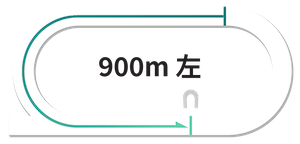川崎1400m攻略法｜内枠優勢のスピード戦
3号スタンド前から発走となり、1コーナーまでの距離が300m弱と短いため、内枠の先行馬にとって有利な条件となります。コーナーまでの距離が短いことから、ペースが安定しやすい傾向があります。
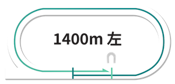川崎1500m攻略法｜差しが利くハイペース指向
4コーナー過ぎ、直線入り口からスタートします。発走地点の内側にラチがないため、1番枠の馬が内に切れ込む場面が時々見られます。1コーナーまでおよそ400mと適度な距離があり、トップスピードで最初のコーナーに入るため、ハイペースになりやすい傾向があります。そのため、川崎では差しが効きやすい距離となっています。
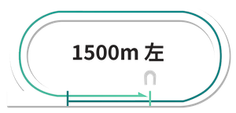川崎1600m攻略法｜メインレースの舞台
4コーナー奥のポケットからスタートします。最初のコーナーまで500m近くあり、枠順の有利不利は少ないですが、ホームストレッチでほぼ隊列が決まってしまうため、極端なハイペースにはなりにくいです。よって1コーナーまでのポジション取りが大きな鍵を握ります。
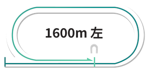川崎2000m攻略法｜騎手の駆け引きが鍵
バックストレッチ中ほどがスタート地点です。最初のコーナーまでは300mもなく、内枠が断然有利です。しかもコーナーを6回も回るという、かなりトリッキーなコース形態です。九分九厘スローペースになるだけに、先行馬が断然有利で、差し馬には機を見て動ける器用さが求められます。
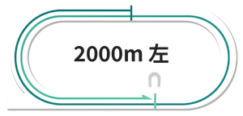川崎2100m攻略法｜絶対能力の差が出るコース形態
2000mと同じく6回のコーナーを通過しますが、こちらは900mと同じスタート地点で、最初のコーナーまで距離があるため枠順差はあまりありません。その他の特徴はほぼ同じで、スローペースの前残りが基本です。
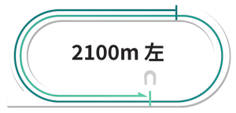浦和競馬場 - 小回り平坦の力勝負コース攻略法

浦和競馬場のコース特徴・基本データ
| 回り | 左回り |
|---|---|
| フルゲート | 12頭 |
| 1周距離 | 1,200m |
| 直線 | 220m（南関最短） |
| 幅員 | 21.5m〜16m |
| 特徴 | 小回り平坦で力勝負のコース |
浦和800m攻略法｜スタート勝負の極短距離戦
向正面の2コーナー付近から発走する短距離戦。直線部分を最大限に活用した序盤のポジション争いが重要で、出遅れは致命的となる。内側の枠番で出足が鈍ると、外側の馬に進路を塞がれ、巻き返しは非常に困難。スタートダッシュの良し悪しが結果を左右する、典型的なスプリント戦といえる。
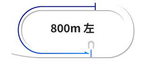浦和1300m攻略法｜内枠先行有利の特殊条件
スタンド前中央付近から発走。最初のコーナーまでが近いため、内側の枠番が有利に働く傾向が強い。流れは比較的穏やかになりやすく、前に位置できるかどうかが重要なポイント。主に下級クラスで施行されるが、この距離に特化した適性を持つ馬が存在することも特徴的。過去の距離別成績を確認することが予想の参考になる。
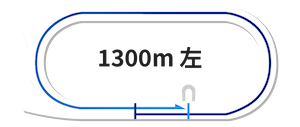浦和1400m攻略法｜位置取りで勝負が決まるメインコース
4コーナー付近、直線の入口付近が発走地点。直線全体を活用してポジション取りが可能で、外側の枠番の馬は内を確認しながら走れる利点がある。内側の枠番はスタートが重要で、出遅れると包まれるリスクがある。流れは速くなる傾向があり、差し脚も効きやすい条件。交流重賞から一般競走まで幅広く使用される、浦和競馬場の主要距離である。
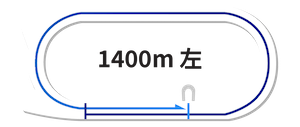浦和1500m攻略法｜中間型コース
4コーナー後方のポケット地点から発走。約100m進むと緩やかなカーブに入るため、内側の馬はやや制約を受けることがある。2007年に設定された比較的新しい距離で、定員は1400mと同様の12頭。1400mより特殊性は低いが、1600mほど極端でもない、バランスの取れたコース設定。
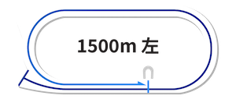浦和1600m攻略法｜外枠の逃げは困難
3コーナーと4コーナーの中間にあるポケットから発走。スタート直後にカーブを迎える、国内でも珍しい特殊なコース形態。この構造により内側の枠番が圧倒的に有利で、外側からの先行は相当なスピードがないと困難。特に逃げ・先行型の馬が外枠に入った場合は大きなハンデとなる。かつては桜花賞が行われていたが、現在は使用されていない。
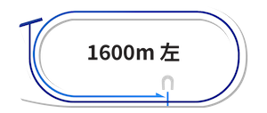浦和1900m攻略法｜器用さが試される6角コーナー戦
向正面の中央付近が発走地点。3コーナーまでの間隔が短いため内側が有利だが、長距離戦で流れが緩むため外枠からでも前に行ける。特筆すべきは6つのコーナーを回ることで、高い操縦性と持続力が要求される。現在は使用されていない。
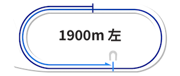浦和2000m攻略法｜絶対能力で決まる長距離戦
1900mと同じく6回のコーナーを通過するが、800mと同位置からのスタートで最初のコーナーまで余裕があるため枠順の影響は小さい。コーナーワークの巧拙は重要だが、この長距離では最終的に総合力の差が明確に表れる。後方一気の決着が少ないのも、実力差がはっきり出やすいコース特性による。
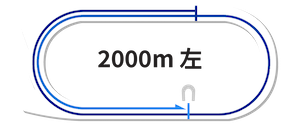